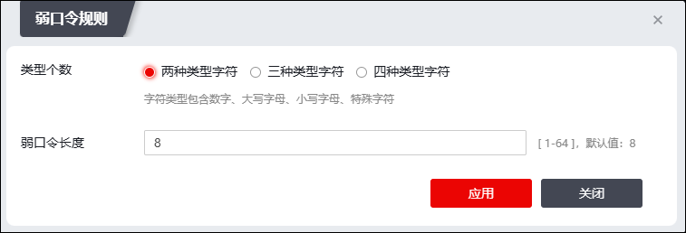
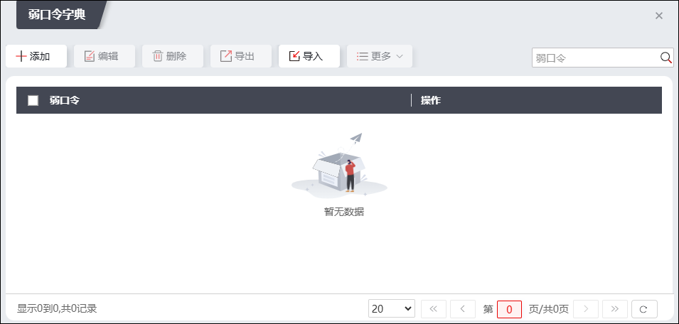

当报文命中被访问控制规则引用的高级威胁防护策略，如果该高级防护策略启用了“弱口令检测”功能，NGFW检测telnet/ftp/smtp/pop3/imap/rlogin等明文协议的内网流量，对于登录成功的情况，判断所用口令是否符合弱口令判断标准，如果符合，进行记录并进行后续的展示。其中，高级威胁防护引擎判定弱口令有两种标准：弱口令规则、弱口令字典。满足弱口令规则或者弱口令字典中的任意一种，判定为弱口令。
弱口令规则和弱口令字典的配置，以及查看弱口令检测结果的操作步骤如下：
选择 ，激活“弱口令”页签。
l配置弱口令规则。
点击“弱口令规则”，可配置弱口令规则，如下图所示。

各项参数的说明如下表所示。
参数 |
说明 |
|---|---|
类型个数 弱口令长度 |
“类型个数”和“弱口令长度”共同判定口令是否为弱口令。仅当口令字符类型个数大于“类型个数”参数设置值，且口令长度大于“弱口令长度”设置值，该口令不是弱口令；否则，该口令为弱口令。 Ø两种类型字符：包含数字、大小字母、小写字母、特殊字符中的任意两种。 Ø三种类型字符：包含数字、大小字母、小写字母、特殊字符中的任意三种。 Ø四种类型字符：包含字符类型包含数字、大小字母、小写字母、特殊字符。 Ø弱口令长度：指定弱口令最大长度，取值范围：0-64，默认值：8。 |
l配置弱口令字典。
点击“弱口令字典”，弹出“弱口令字典”窗口，在弱口令字典配置窗口中，点击“添加”，可逐个添加弱口令；点击“导入”可批量导入弱口令。

l查询弱口令检测结果。
1）在界面最上方搜索条件配置区域设置检测出弱口令的时间范围、存在弱口令的服务器地址，点击【查询】可搜索满足条件的弱口令检测结果信息。
2）点击弱口令检测结果列表左上角的“导出->导出选择项/导出当前页/导出全部”，可导出相应检测结果信息。
3）点击【重置】可重置查询条件。